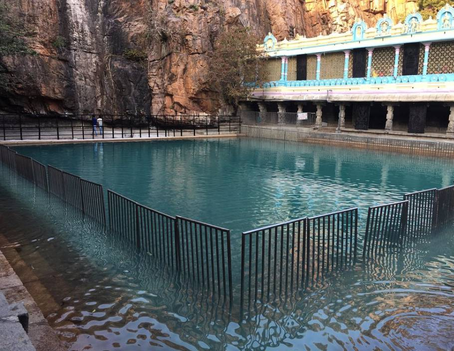
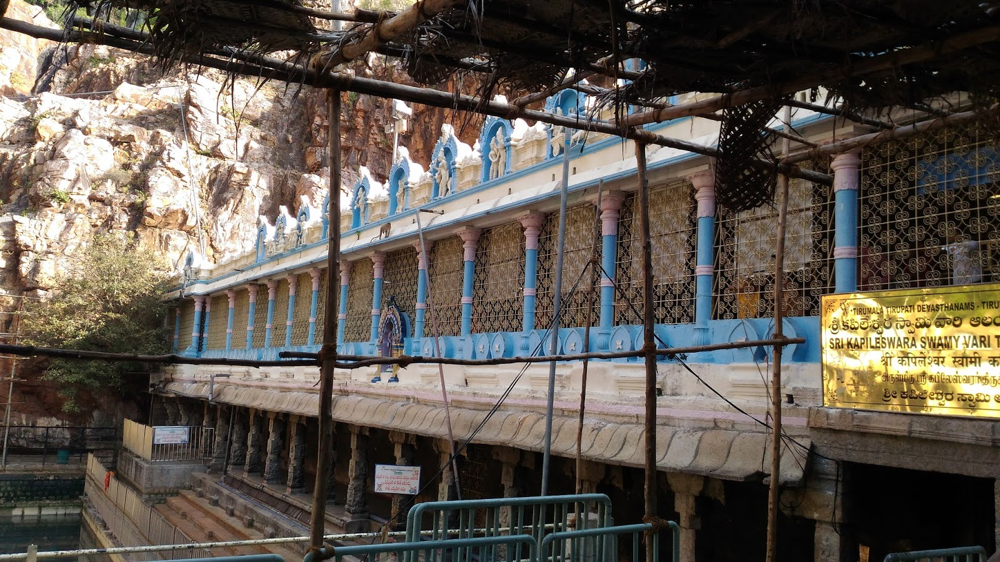
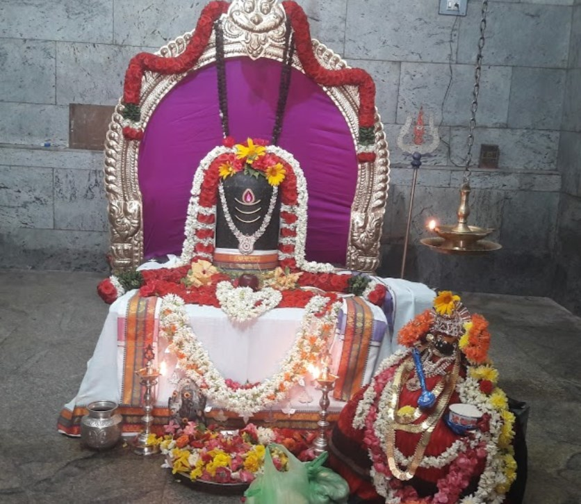
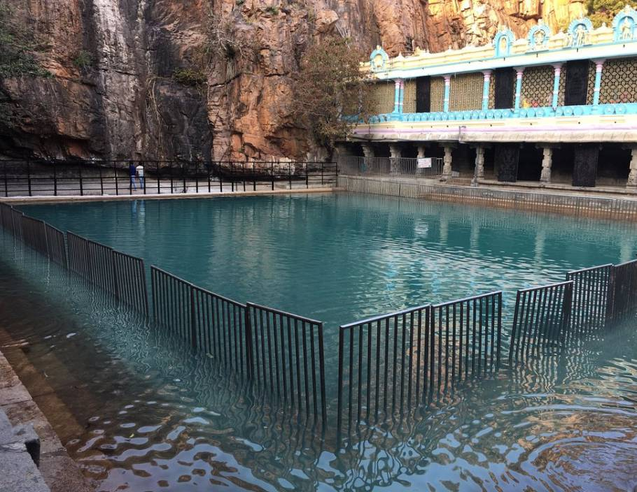
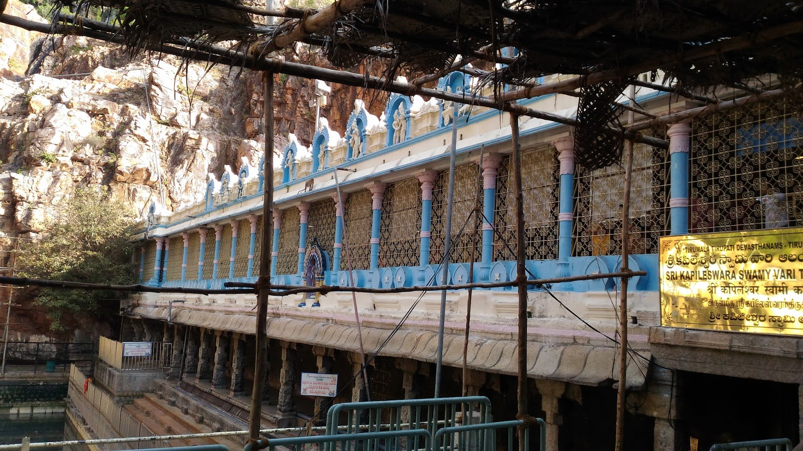
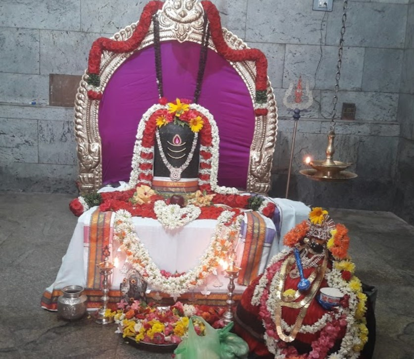
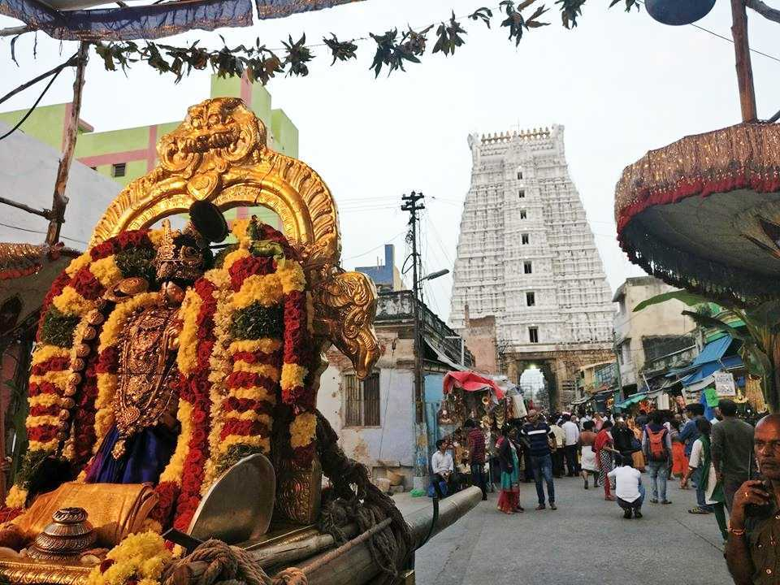
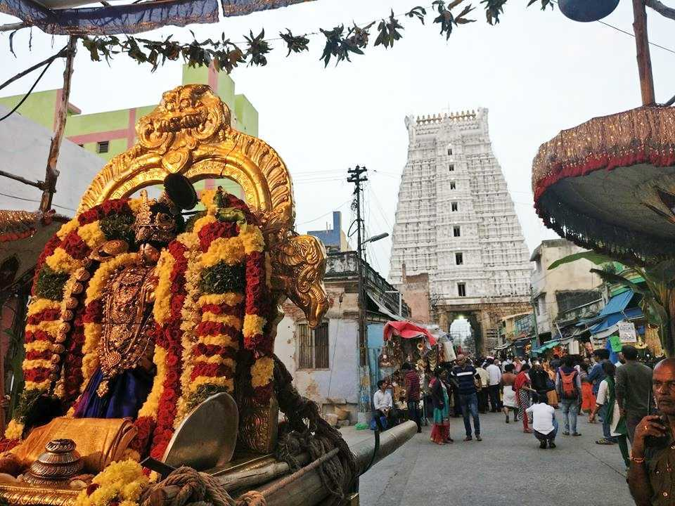

Popularly known as Tirupati Balaji Temple, the Venkateswara Temple in Tirupati dates back to 800 AD and is one of the wealthiest Tirupati temples of the world. Resting peacefully on the seventh peak of Tirumala Hills, just to the north of the flowing Sri Swami Pushkarini River, this temple is visited by thousands of pilgrims every day. This temple was built in commemoration of Lord Venkateswara.
The temple has another entrance that is painted golden, a complete contrast to the main silver entrance. Pilgrims coming from all walks of life pay their homage to Lord Venkateswara by singing hymns and chanting prayers. The blessings of God are offered in the form of food known as prasad. The temple is illuminated with lights and candles on grand festivals and is revered as one of the most magnificently built temples in Tirupati.
Location: S Mada St, Tirumala, Tirupati, Andhra Pradesh 517504
Timings: 2:30 am – 1:30 am
Main Deity: Lord Venkateswara
The list of Hindu temples in Tirupati is incomplete without mentioning Padmavathi Temple. A pearly white five-storied tower forms the fascinating entrance to the divine Padmavathi temple. Pilgrims on their way to visit Sri Venkateswara Temple first stop and pay their respects to Goddess Padmavathi, the incarnation of Goddess Parvati. Said to be the wife of Lord Venkateswara in Kali Yuga, this temple is present in close vicinity of Tirupati Balaji.The complex of the temple has a large lake called Padma Sarovaram. Bathing in its waters with full devotion is considered divine as this the lake where Goddess Padmavathi is said to have appeared as a golden lotus flower. On special festivals and grand celebrations, a huge crowd gathers to take a dip and pray in the old waters of Padma Sarovaram. Miniature temples belonging to other deities like Sri Krishna Swamy are also present inside the premises.
Location: Sannidhi St, Tiruchanur, Tirupati, Andhra Pradesh 517503
Timings: 5:00 am – 9:00 pm
Main Deity: Goddess Parvati
 





Situated at 280 feet high Naubat Pahad, the Birla temple is one of the most beautiful and famous temples in Hyderabad city. The temple was built in 19th and is dedicated to Lord Venkateshwara of Tirumala.The white marble structure, sprawling premise, beautiful sculptures and stone carvings of Gurbani and various teachings of esteemed saints, not only fascinate spiritual visitors but has made this place one of the major tourist attractions of Hyderabad. Along with the main shrine, the temple has other idols of Lord Ganesha, Brahma, Saraswati, Vishnu, Shiva, and Hanuman. Owing to its hilltop location, the temple offers mesmerizing views of Hyderabad city and Husain Sagar lake.
Opening hours: 7 am to 12 noon and 3 pm to 9 pm
Location: Birla Temple Hyderabad, Telangana 500063
 

Once upon a time, a great saint named Ramanujacharya saw Lord Govindraja Swamy in his dream. Pilgrims come here every year to worship Lord Govindraja to pray for the wealth and prosperity of their families. The monumental beauty of its architecture attracts many tourists. Starting from its entrance to its inner courtyards, all aspects of this structure are designed beautifully and because of its architectural wonder, it is popular as one of the famous temples in Tirupati.The entrance of this temple has a seven-storied tower with the holy pot of Kalash built on its top. Carvings of scenes depicting the life of Lord Vishnu as Venkateswara and stories from Hindu legends like Ramayana are chiselled all over the stone complex of the temple. Bustling crowds fill the courtyard as they chant hymns and seek the blessings of their lord.
Location: Chittoor
Timings: 5:00 am – 8:30 pm
Main Deity: Lord Govindraja